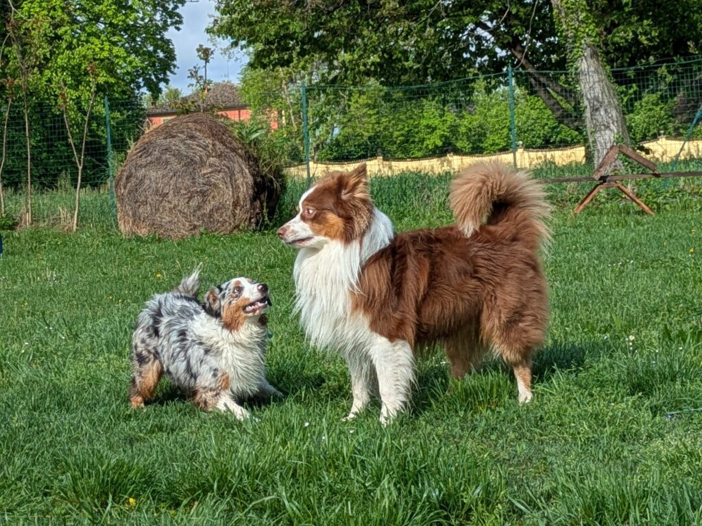

Incontri guidati in piccolo gruppo dove i cani imparano a stare bene insieme — con altri cani, con persone nuove e in ambienti diversi.

Gli incontri si svolgono in piccoli gruppi selezionati per compatibilità di età, dimensione e carattere. Il ritmo è lento e controllato: ogni cane avanza secondo i propri tempi, senza forzature.